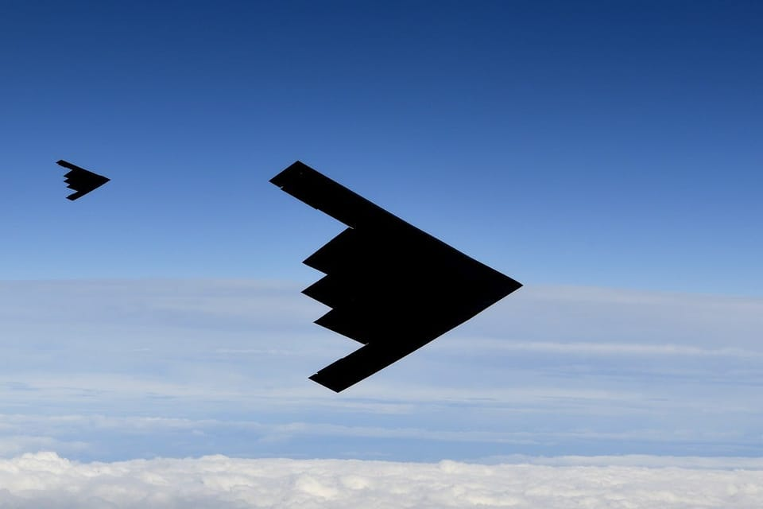

世界苦茶06月22日新闻 | 33条 | 美国空袭伊朗三处核设施

美国空袭伊朗三处核设施 | 中国使用外资加速下跌 | 中国《捞女游戏》引发性别争议 | 日本单方面取消2+2与美国会谈 | 澳大利亚将实施社交禁令 | 巴西热气球事故8人死亡
每天三件事
苦茶数据
美元兑人民币：7.18（昨日7.17，前日7.18）
美元兑日元：145.92（昨日145.24，前日145.29）
上证指数：休市（昨日3359，前日3364）
标普500指数：休市（昨日5967，前日5980）
比特币：102455（昨日103517，前日104672）
布伦特原油：77.01（昨日76.97，前日77.38）
以伊战争
• 美空袭伊朗三处核设施 ：特朗普6月21日夜宣布，美国已成功对伊朗位于福尔道、纳坦兹及伊斯法罕的3处核设施实施打击。在福尔道投放了满载的炸弹。所有飞机已安全离开伊朗领空。消息人士称，美国B-2隐形轰炸机被用于打击3处伊朗核设施。该轰炸机可投放能够破坏位于福尔道地下核设施的巨型钻地弹。此前，多架美国B-2轰炸机飞往关岛。特朗普稍晚宣布将于美东时间22时向全国发表讲话，介绍此次军事行动。
• 胡塞威胁攻击美舰 ：也门胡塞武装说，如果美国对伊朗发动攻击，组织将袭击红海海域的美国军舰和船只。新华社报道，胡塞武装发言人叶海亚·萨雷亚星期六发声明说，胡塞武装部队正在“密切关注并监视这地区的所有动向，包括针对也门的敌对活动”，并将采取一切“必要合法手段保卫也门”。他说，以色列企图在美国的支持与合作下彻底控制整个地区，伊朗则被视为这计划实施道路上的最大障碍。他说：“我们支持伊朗……我们不会允许美国及它的犯罪实体在这地区实施他们的计划。”
• 以色列空袭伊朗致400死 ：伊朗卫生部说，过去九天，以色列对伊朗的袭击已造成400多个伊朗人死亡，3056人受伤。伊朗卫生部公共关系负责人侯赛因·克尔曼普尔星期六在社交媒体平台X上发贴文称：“截至今天早上，以色列的袭击已造成400多个手无寸铁的伊朗人死亡，另有3056人因导弹和无人机袭击受伤。”他说：“伤者中，2220人已在卫生部医院接受治疗并出院，232人在袭击现场接受门诊治疗。”新华社引述这名卫生官员称，大多数伤亡者是平民，在以色列的袭击中丧生的人员中有54名妇女和儿童。
• 伊朗外长出席伊斯兰会议 ：伊朗外长阿巴斯·阿拉格齐抵达土耳其最大城市伊斯坦布尔，参加伊斯兰合作组织会议，讨论德黑兰与以色列之间不断升级的冲突。伊朗塔斯尼姆通讯社星期六报道：“外交部长上午抵达伊斯坦布尔，参加伊斯兰合作组织外长会议。”约40名外交官将参加本周末的会议。土耳其外交部长哈坎·费丹指责以色列于6月13日袭击伊朗，将中东引向“彻底的灾难”。他在会议上说：“巴勒斯坦、黎巴嫩、叙利亚、也门或伊朗都不存在问题，但以色列显然存在问题。”他呼吁以色列停止对伊朗的“无限制侵略”，并补充道：“我们必须防止局势恶化为暴力循环，危及地区和全球安全。”
• 以军袭击伊朗革命卫队将领 ：以色列国防部长卡茨说，以军向伊朗库姆的一栋公寓发动袭击，击毙伊朗伊斯兰革命卫队海外支部一名资深指挥官。路透社报道，卡茨在星期六的一份声明中说，这名资深指挥官名为伊扎迪负责伊朗革命卫队下属圣城旅的巴勒斯坦分支。伊朗革命卫队尚未证实伊扎迪的死讯。
• 以军击毙伊朗无人机旅指挥官 ：以色列国防军星期六宣布，以色列空军星期五打死伊朗伊斯兰革命卫队空军第二无人机旅指挥官贾达基。新华社报道，以色列国防军发表声明说，贾达基曾在伊朗西南部阿瓦士地区指挥对以色列本土发动数百次无人机袭击。声明提到，以军6月13日击杀伊朗伊斯兰革命卫队空军的无人机部队司令塔赫尔—普尔后，贾达基在无人机部队作战行动中担任关键角色。
• 特朗普否认情报机构评估 ：美国总统特朗普说，美国国家情报总监加巴德有关没有证据表明伊朗正在制造核武器的说法是错误的。新华社报道，特朗普星期五在新泽西州参加活动时发表上述言论，这是特朗普本周第二次否定其情报主管关于伊朗核武器的相关评估。6月17日，特朗普在美国总统专机“空军一号”上回答媒体提问时说，他认为伊朗“非常接近”拥有核武器。有媒体随即提及，加巴德先前所作情报评估显示伊朗并未研制核武器，但特朗普坚称：“我不在乎她说什么，我认为他们伊朗非常接近拥有核武器。”
中国新闻
• 《捞女游戏》引性别争议 ：号称首款情感反诈互动影游的《捞女游戏》在中国网络引发热议，官媒发文批评游戏将情感欺诈与女性强行绑定，靠性别对立“捞”流量只会一塌到底。据新浪游戏报道，由香港导演胡耀辉执导的《捞女游戏》星期四在游戏平台Steam上线。玩家可以在游戏中扮演一个曾被“捞女”伤透，决心反击捞女组织的“情感猎手”。报道称，游戏设计来源于主创团队真实经历，还上线“互助留言板”功能提供男性玩家互助，可在此“分享识别捞或被捞的真实经历与观察，交流应对各类情感操控的心得、策略与反思”。
• 李家超表示，国安与经济并重 ：香港特首李家超在《香港国安法》公布实施五周年论坛上说，香港既要继续维护好国家安全，也要全面拼经济谋发展，时刻以国家安全的高度去审视和解决问题。李家超星期六出席《香港国安法》公布实施五周年论坛并在致辞中说，“2019年港版颜色革命”对香港造成巨大创伤，是每一位热爱香港的市民难以忘怀的惨痛记忆。他回忆称：“暴徒肆虐、港独猖獗、反中乱港分子揽炒香港，拉香港跳崖。暴徒纵火、虐打市民、捆绑脱衣侮辱、乱掷汽油弹、袭击警察、严重破坏公共设施，有市民被泼洒易燃物体严重烧伤，有市民被暴徒投掷的砖块击中头部死亡，香港迅间堕入痛苦深渊，安全荡然无存。”
• 马英九表示，台人坚定中华认同 ：台湾前总统马英九在甘肃参与公祭中华人文始祖伏羲大典时说，大部分台湾人对中华文化与民族认同，都有极其坚定的信念；即使台湾曾被日本殖民统治50年，仍坚持身为炎黄子孙，保有中华民族的主体性和尊严。综合台湾《联合报》《自由时报》报道，马英九6月14日至27日率团访问中国大陆，于6月15日出席在福建厦门举办的第17届海峡论坛后，前往甘肃参加两岸共同弘扬中华文化等活动。马英九星期六出席在甘肃天水举行的2025年公祭中华人文始祖伏羲大典时说，慎终追远、饮水思源，原本就是中华民族建立数千年优良传统的重要根源，是中华文化的核心价值。
• 空客称中国产能不可替代 ：航空巨头空中客车中国公司首席执行官徐岗说，中国供应链对空客提升全球产能的作用不可替代，并透露空客天津A320系列飞机第二条总装线建设正持续推进，预计明年初投入使用。徐岗接受新华社星期六刊发的专访时说，今年是空客与中国航空业合作40周年，也是空客单通道飞机A320系列进入中国30周年，具有里程碑意义。报道称，截至2025年4月底，空客在中国大陆在役机队有超过2200架飞机，市场份额约为55%；这些飞机中约三分之一来自空客A320系列飞机天津总装线。
• 成都警方辟谣聚众事件 ：中国四川省成都市警方否认当地百花潭公园发生聚众淫乱的消息，称网传违法事件未发生于百花潭公园及成都市行政区域内，散布消息男子已被行政拘留。据“成都公安”微信公众号消息，四川成都市公安局青羊区分局星期五发布警情通报称，针对近日网传“成都百花潭公园发生聚众淫乱行为”的信息，经公安机关依法调查，现查明，网传所述违法事件未发生于百花潭公园及成都市行政区域内。
• 易建联专访未如期播出 ：中国央视体育频道原定星期五播出前篮球名将易建联的专访，但节目并未如期上线，双方目前均未对此作出回应。综合《大河报》和九派新闻报道，央视体育频道节目预告中显示，定于星期五晚上6时35分的《篮球公园》中播出CBA联赛30年系列片易建联专访。但这一片段当晚并未如期播出。截至星期六下午2时，央视未就此作出解释说明，易建联也未对此回应。
• 欧盟禁中企投标遭批评 ：针对欧盟宣布禁止中国企业获得逾500万欧元的欧洲政府医药设备订单，欧盟中国商会批评，此举不公平且具有歧视性，并对此表示坚决反对。据中新社报道，总部位于布鲁塞尔的欧盟中国商会星期五发表声明称，欧盟委员会当天依据其《国际采购工具》调查，排除中企参与价值超过500万欧元的欧盟医疗器械公共采购项目，要求中标项目来自中国的产品及零部件比例不得超过50%。欧盟中国商会在声明中，对欧盟单边保护主义做法、公开对中企采取不公平歧视性措施表示坚决反对。
• 斯里兰卡驱逐85名中国公民 ：斯里兰卡星期五驱逐85名涉嫌对银行实施网络犯罪的中国公民。据法新社报道，上述人员去年10月因涉嫌对国际银行发动网络诈骗被警方逮捕，后因违反旅游签证规定被驱逐出境，并各被罚款约250美元。一名斯里兰卡移民官员透露，这批人员已于星期五早上搭乘斯里兰卡航空包机被遣返回中国广州，全程由斯里兰卡警方和中国安保人员护送。
亚太印太新闻
• 国民党批罢免投票不公 ：台湾在野的国民党主席朱立伦批评，中央选举委员会公布的大罢免投票日，就是执政的民进党立法院党团总召柯建铭之前预告的7月26日，“这是台湾民主之耻”，民进党则回应称国民党是在羞辱公民。中选会星期五宣布，将在7月26日针对24名在野国民党立委进行罢免投票，此次投票可能会让民进党夺回立法院掌控权。而柯建铭5月就曾预言，大罢免将在7月26日举行。据《联合报》报道，针对柯建铭“神预言”投票日期，朱立伦星期六上午受访时批评“这是台湾民主之耻，中选会主委叫柯建铭，中选会就是民进党的中选会”。
• 韩总统下令查新天地教会 ：据韩国媒体报道，韩国总统李在明的办公室近日下令，要求多部门联合调查邪教“新天地教会”的非法活动。中国新闻社引述报道称，韩国反邪教组织人权复原会向总统办公室请愿，要求调查“新天地教会”，得到了积极回应，称将对“新天地教会”进行多部门联合调查。人权复原会一直在致力于帮助那些从“新天地教会”退出的人恢复日常生活，并在线上和线下揭露“新天地教会”的情况。这个组织全称是新天地耶稣教证据帐幕圣殿教会。人权复原会在声明中主张：“新天地只是利用基督教的内容，其本质是与宗教毫无关系的非法传销团体。他们的目的不是传播信仰，而是通过招募组织成员来追求金钱利益。”人权复原会称，从2012年开始，“新天地教会”曾让信徒们伪装就业到建设公司后，非法领取了信徒们的失业津贴和健康保险。人权连带Recover代表权泰玲批判道：“新天地除了非法领取信徒的失业金，还教唆信徒们有组织地领取基础生活保障金，将信徒们用作追求金钱利益的手段。”
• 台国安局清查威权档案 ：台湾国安局以推动转型正义为由，主动全面清查局内戒严时期政治档案，并已移除营区内所有威权象征铜像。综合台湾《自由时报》和Newtalk新闻网报道，台湾国安局星期六发新闻稿说，从去年11月起，国安局已动员各单位人力，以人工方式逐一清查1992年以前包含戒严时期在内的所有档案。这项工作在今年5月完成，总计检审2万3757卷，共56万6415件档案。国安局进一步说明，属于政治档案的共1369卷，4万9482件档案，包括“涉及叛乱案件相关人员资料与判决书”“与情报机关执行侦保防业务有关案情”“军中保防与检举案件调查”“与戒严体制运作有关法规执行状况”等。这些档案已在6月份移交国发会档管局审定。
• 赖清德展开十讲宣讲活动 ：台湾总统赖清德将启动“团结国家十讲”宣讲活动，围绕外交、国防等议题阐述政府立场，但此举也被质疑与即将登场的罢免投票有关，旨在为民进党拉抬声势。综合台湾《联合报》《中国时报》和TVBS新闻网报道，台湾总统府发言人郭雅慧星期六说，赖清德自上任以来，始终希望能以具体行动团结民众、朝野及台湾，因此决定从星期天起，应邀前往各地民间社团展开“团结国家十讲”活动，借由宣讲活动“说明政府立场，同时促进社会对话、最大团结国家”。郭雅慧说，这十场演讲将围绕国家、团结、宪政体制、外交、国防、两岸、民主、和平、繁荣及均衡台湾等十个主题展开。赖清德盼借此直面台湾声音，倾听民众想法、团结台湾。
• 日本取消美日高层会谈 ：匿名消息称，美国特朗普政府要求日本增加国防开支后，日本取消与美国的定期2+2高层会谈。美国国务卿鲁比奥和国防部长赫格塞斯与日本外长岩屋毅和国防部长中谷元，原定于7月1日在华盛顿举行年度2+2安全会谈。英国《金融时报》星期五引述匿名消息人士包括两名东京官员的话说，在美国要求日本将国防开支提高到国内生产总值的3.5%后，日方取消7月1日的2+2会谈。
• 印度表示，永远不会与巴基斯坦恢复印度河水条约： 印度内政部长阿米特·沙阿周六接受《印度时报》采访时表示，印度永远不会与伊斯兰堡恢复印度河水条约，流向巴基斯坦的水将被转用于国内使用。
科技新闻
• 孙正义拟美建AI园区 ：日本软银集团创办人孙正义据报正寻求与台积电合作，在美国亚利桑那州打造一个庞大的人工智能与机器人产业园区，项目估值预计高达1万亿美元。彭博社星期五报道，孙正义构想的“晶圆之地”灵感来自中国深圳的高科技制造重镇，旨在把先进制造业带回美国。该园区预计将包含多条以AI驱动的工业机器人生产线。软银方面希望台积电能在项目中扮演重要角色，但目前尚不明确孙正义希望台积电具体参与哪些部分。台积电目前已计划在美投资1650亿美元，其在亚利桑那凤凰城的首座工厂已启动量产。
• 联合国表示，穷国更信任AI ：联合国一项研究显示，全球国家对人工智能技术的态度存在明显分歧：低收入国家对AI信任度最高，富裕国家则普遍持怀疑态度。调查显示，逾八成中国民众信任这项技术。据彭博社星期五报道，根据联合国开发计划署对21个国家进行的一项调查，在发展中国家中，逾六成受访者相信AI有助于服务社会整体利益。在三分之二受访国家中，有超过一半受访者对AI“被用于善”的设计初衷表现出某种程度的信心。在AI领域稳步发展并对美国主导地位构成挑战的中国，约83%受访者信任这项技术。
• 澳大利亚将实施全球首个社交媒体禁令： 澳大利亚政府针对16岁以下用户的全球首个社交媒体禁令接近实施，此前一项关键试验发现，核查用户年龄在技术上是可行的，并且可以整合进现有服务中。这一结论对反对这项有争议的立法的Meta、TikTok 和 Snap Inc. 来说是一个打击。部分平台运营商质疑，使用现有技术是否能够可靠地确定用户的年龄。政府支持的试验结果为该法律在今年年底前生效铺平了道路。政府委托的年龄验证技术试验在周五宣布其初步结果的声明中表示：“年龄验证可以在澳大利亚进行，并且可以私密、稳健且有效。”此次试验测试了一系列方法和技术，包括面部扫描、基于用户行为推断年龄、年龄验证以及家长控制。 （翻评：我觉得很多人要分清楚，这和澳大利亚要搞杨永信式的戒断社交营完全不是一个事情，对社交和智能手机禁令，不必太情绪化的理解。）
财经新闻
• 报告称外资车企在华失势 ：一项研究报告预计，随着中国本土汽车品牌继续蚕食国内市场份额，日本、欧美等外资车企在中国市场的前景将愈发黯淡。据彭博社星期五报道，咨询公司艾睿铂最新研究报告预计，到了2030年中国汽车品牌在国内市场的份额将攀升至76%，而外国车企的占有率将会继续下滑。过去，中国汽车产业长期依赖外资合资企业，但在政府的大力扶持与新能源投资推动下，中国汽车产业格局经历快速转型：本土品牌崛起的同时，外资车企逐渐被边缘化。
• 前5月中国外资下降13% ：中国今年前五个月实际使用外资金额同比下滑13.2%，降幅扩大。中国商务部星期五公布，今年前五个月，全国新设立外商投资企业2万4018家，同比增长10.4%；实际使用外资金额3581.9亿元人民币，同比下降13.2%。今年前四个月，中国实际使用外资金额同比下滑10.9%。
• 饿了么前CEO涉罪被调查 ：中国外卖巨头饿了么前首席执行官韩鎏涉嫌职务犯罪，被警方带走调查。综合澎湃新闻和《经济观察报》报道，饿了么官方星期五证实，经内部调查发现物流主管韩鎏涉嫌职务犯罪，并向公安机关主动报案，韩鎏近日已被警方带走调查。据《中国企业家》杂志了解，韩鎏被调查，可能涉及供应链利益输送。
俄乌战争
• 泽连斯基请求援助武器生产 ：乌克兰总统泽连斯基呼吁西方盟友拨出相等于国内生产总值0.25%的资金，协助乌克兰生产更多武器。泽连斯基星期六发表声明说，乌克兰正与丹麦、挪威、德国、加拿大、英国和立陶宛探讨一个联合生产武器的项目。他说：“乌克兰是欧洲安全的一部分，我们希望个别伙伴国家分配GDP的0.25%给我们的国防工业和本土武器生产。”
• 白俄释放反对派赴立陶宛 ：白俄罗斯释放了反对派领导人谢尔盖·季哈诺夫斯基及其他13名政治犯。季哈诺夫斯基的妻子、流亡反对派领导人斯韦特兰娜·季哈诺夫斯卡娅的团队宣布了该消息。这些人已经抵达了立陶宛。季哈诺夫斯卡娅称，白俄罗斯仍有1100名在押政治犯，她团队的工作尚未完成。释放前数小时，白俄罗斯总统卢卡申科会见了美国乌克兰事务特使基思·凯洛格。白通社的新闻稿表示双方会谈议程涵盖国际热点问题、全球局势、地区事务以及白俄罗斯与美国双边关系等议题。
• 丁薛祥表示，中俄合作稳定供应链 ：中国副总理丁薛祥与俄罗斯总统普京会面时说，中国国家主席习近平和普京定向掌舵是中俄深化合作的最大保证，并称中俄两国应支持多边贸易体制，携手维护产供链稳定。据新华社报道，丁薛祥星期五在圣彼得堡与普京会面时说，习近平和普京定向掌舵是中俄深化合作、延续世代友好的最大保证，也是两国共同应对前进道路上各种不确定性的最大确定性。他说，中方愿同俄方不断巩固政治互信，拉紧利益纽带，持续扩大经贸投资，深化能源领域务实合作，推进有关项目建设，支持两国各自发展振兴。
其他新闻
• 巴西热气球起火致8死 ：巴西南部一搭载21人的热气球星期六在空中突发起火并坠地，造成至少八人死亡、13人幸存。法新社报道，这起事故发生在圣卡塔琳娜州的普拉亚格兰德市，这地区是巴西知名的热气球旅游胜地。据目击者拍摄的视频，事发时天气晴朗，但热气球在高空突然起火，载客篮架瞬间被火焰吞噬，随后从数十米高空坠落。警方已展开事故调查。当地警官莱莫斯指出，初步调查显示，起火原因可能与篮内喷火器故障有关。飞行员在起火后尝试紧急降落，并呼吁乘客在接近地面时跳离篮架，“但部分乘客未能及时跳出，火势迅速蔓延”。
• VOA等美媒裁员六百多人 ：美国总统特朗普的政府周五下令美国之音等数个美国政府资助的媒体裁员600多人，不顾法律争议及遭指美国对手将因此受益的批评，执意推进大幅裁员行动。美国国际媒体署高级顾问雷克表示，为了拆解臃肿、缺乏问责的官僚体系，早就该进行这些裁员。雷克在声明中还说，她将与美国国务院和国会合作，确保美国的叙事是现代化、有效且与美国外交政策相符。特朗普政府继先前提供自愿离职方案及与外包人员解约后，今天再对 639 名员工发出解雇通知。雷克表示，至今已裁撤约1400个职位，仅剩250个。美国之音这轮裁员包括其波斯语部门的记者。
• 尼日利亚东北部博尔诺州孔杜加地区6月20日晚发生自杀式爆炸袭击事件： 一名袭击者20日晚在当地一家食品店引爆了一个简易爆炸装置。袭击造成包括袭击者在内的至少24人死亡，另有数人受伤。目前尚无任何组织宣称制造了这起袭击事件。
• 巴基斯坦推荐特朗普获诺奖 ：巴基斯坦宣布，将推荐美国总统特朗普角逐诺贝尔和平奖，以表彰他为解决近期巴基斯坦与印度冲突所做的贡献。路透社引述巴基斯坦政府星期六的声明说：“特朗普总统通过与伊斯兰堡和新德里双方的积极外交接触，展现了卓越的战略远见和卓越的政治才能，缓和了迅速恶化的局势。此次干预证明了他作为真正和平缔造者的角色。”一些巴基斯坦分析人士指出，此举或将促使特朗普重新考虑是否与以色列联手打击伊朗核设施。巴基斯坦谴责以色列的行动违反国际法，并对地区稳定构成威胁。 （翻评：巴铁！竟然不是推荐提供了J10-C和大笔金钱的习近平主席？）